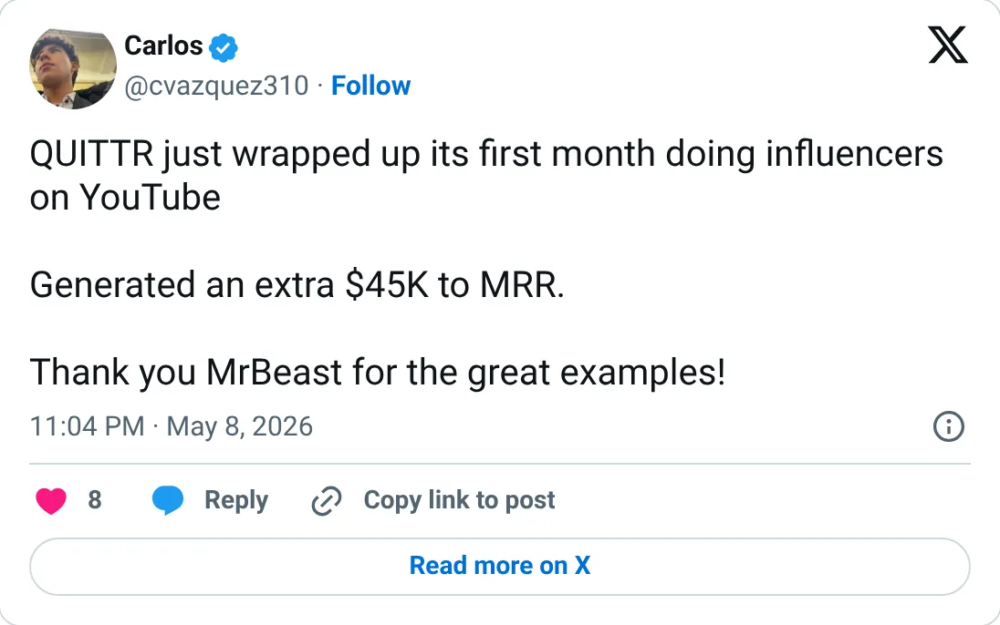
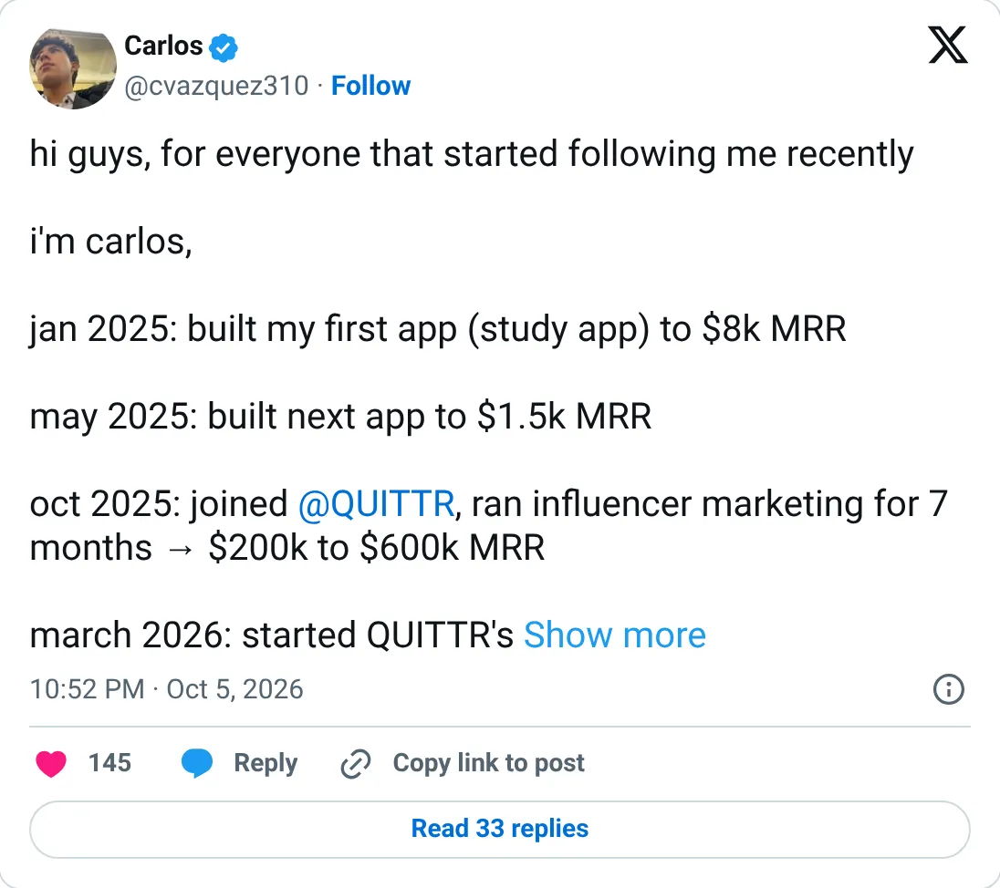

Don't build this
QUITTR
A consumer habit app whose two public MRR numbers don't match.
$600K MRR
Should you build this
QUITTR is a quit-porn app sold through influencers. One post puts it at $600k MRR. A later roundup puts it at $250k. The co-founder then folds it into Cal AI as a combined '$50M ARR'. You cannot decide to spend a year on this using a number that disagrees with itself, and the distribution depends on ad accounts that ban this category. If you build a habit app, underwrite it with a processor screenshot, not with this one.
Cited from the captured posts, shown below: the earliest captured post (May 8, 2026) is the source for “First month of YouTube influencers added an extra $45K to MRR”; the latest milestone (Oct 5, 2026): This post is cited for more than one point in the trail: $200K MRR when the growth lead joined (Oct 2025); $600K MRR after 7 months of influencer marketing (approximate date).
Posts this is based on

First month of YouTube influencers added an extra $45K to MRR
Open on X

This post is cited for more than one point in the trail: $200K MRR when the growth lead joined (Oct 2025); $600K MRR after 7 months of influencer marketing (approximate date)
Open on X
What the product is
Quit-porn / habit-recovery app with streaks, a panic button and community, scaled through influencer and UGC marketing. Built by members of the "App Mafia" group of consumer-app founders.
Public trail
- $200K$200K MRR when the growth lead joined (Oct 2025) source
- •First month of YouTube influencers added an extra $45K to MRR source
- $600K$600K MRR after 7 months of influencer marketing (approximate date) source
- •Third-party summary: "QUITTR: $250K MRR in 5 months" source
- •Co-founder: the team scaled Cal AI and QUITTR to 20M+ downloads and $50M ARR combined source